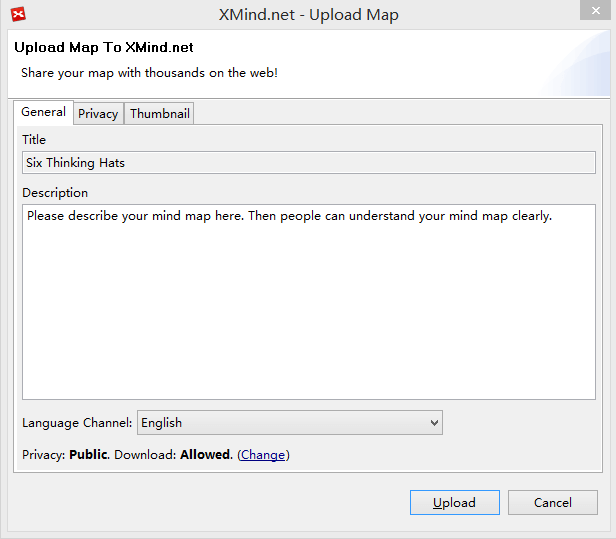
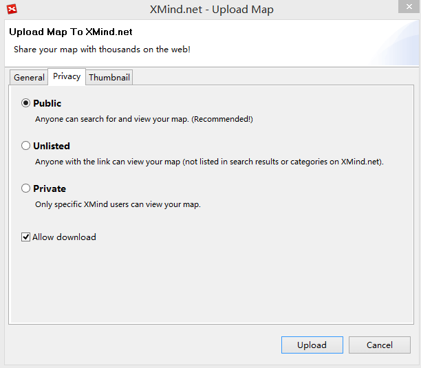
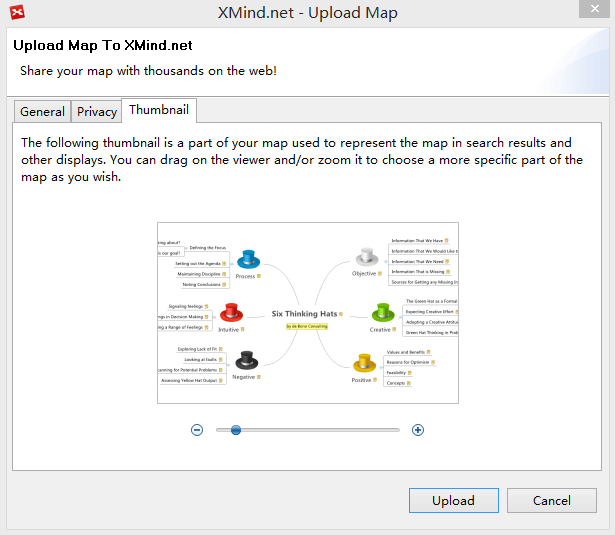
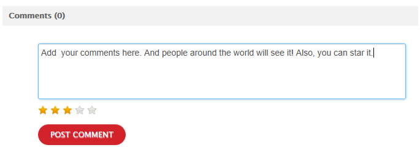
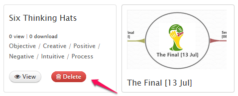
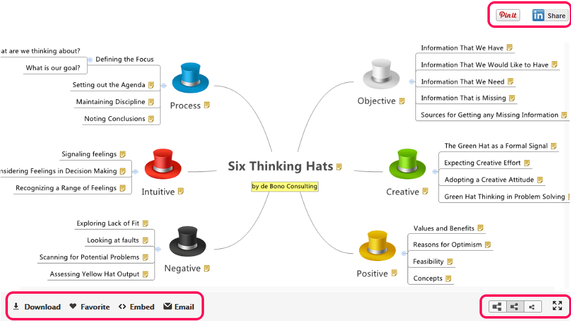
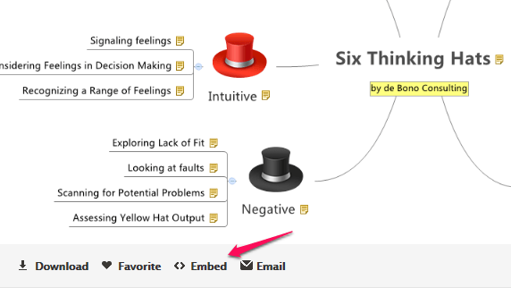

XMind.net で共有
XMind Share は、家族、友人、同僚、そして世界中の人々と、マインド マップを共有するための無料のオンライン サービスです。それは、お気に入りのマップのためのクラウド ストレージです。重要なことは、私たちのブログやWebサイトに、簡単にマインド マップを埋め込むことができることです。
マップをアップロード- XMind アカウントが必要ですので、持っていない場合はどうぞサインアップ してください。
- メニューの[ヘルプ]→[XMind ID サインイン]を選び、XMind.net にサインインします。
- マップを、開くか作成します。
- ツールバーの右端の[XMind.net にアップロードして共有] ボタンをクリックします。
- アップロードダイアログが表示され、マップ説明の追加、マップのプライバシーの設定、サムネイルの変更を行う必要があります。
- ダイアログの下部にある[アップロード]]ボタンをクリックし、マップをアップロードします。
それでは、アップロードダイアログ ボックスについて確認してみましょう
- 概要では、このマップの説明を追加することができます。
 - プライバシーでは、マップの公開、非公開、プライベートの区分と、ダウンロードを許可するか設定します。
 - プレビュー設定

マップの、削除、表示、コメント
アップロードが完了したら、メニューの[ヘルプ]→[アカウント(XMind ID)]を選択して、XMind 内のブラウザーでアップロードしたマップを確認することができます。
- 削除: マインド マップのサムネイル上にマウスを移動し、[Delete]ボタンをクリックします。
- 表示: マインド マップのサムネイル上にマウスを移動し、[View]ボタンをクリックします。
- コメント: マインドマップの下に直接コメントを追加します。 

マップビューアー

In this viewer, we can navigate, download, mark and share the map.
- Navigate: Drag and drop or use the scrollbar to navigate the map.
- Dowload: Click the download button at the bottom of the map directly.
- Mark: Add the map to your favorite maps by clicking the "favorite" button.
-
Share: You can share the mind map via social networking, email, blog and website.
- Social Networking：You can now share the maps on your Pinterest and LindedIn page.
- Email: Click the "Email" button.
- Blog & Webstie: Click the "Embed" button, copy and paste the code on the coming dialog to your blog or website
3 つの異なるプライバシー設定
In the privacy page, we know any map can have three kind privacies, Public, Unlisted, and Private. The way to share maps with different privacies has a litter differences
- Public Maps has no limitations. They can be seen by any person and searched by search engine.
- Unlisted Map can not be searched by search engine. They are not shown on XMind Share too. People, only who know map's URL, can read it.
- Private Map is available for all XMind users. If you want to share a private with some people, you should click the special Share to button and send the invitation to them. People, who get the invitation email, should at least have a free XMind Account for reading this private map online.
Now we find that unlisted map should be helpful to share a map in some special stituation, such as at meeting,at class, and etc. And Private Map will be able to play an important role in collaborating within a small team, or share some special and important information.
このサービスは、Amazon S3 サービスによって実現しています。